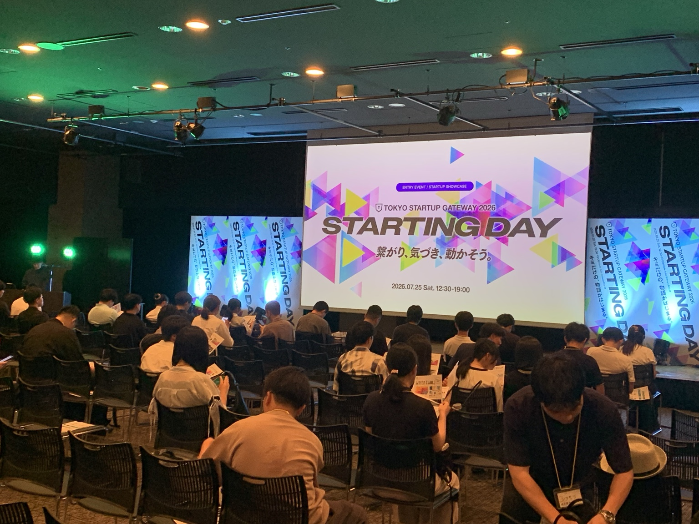
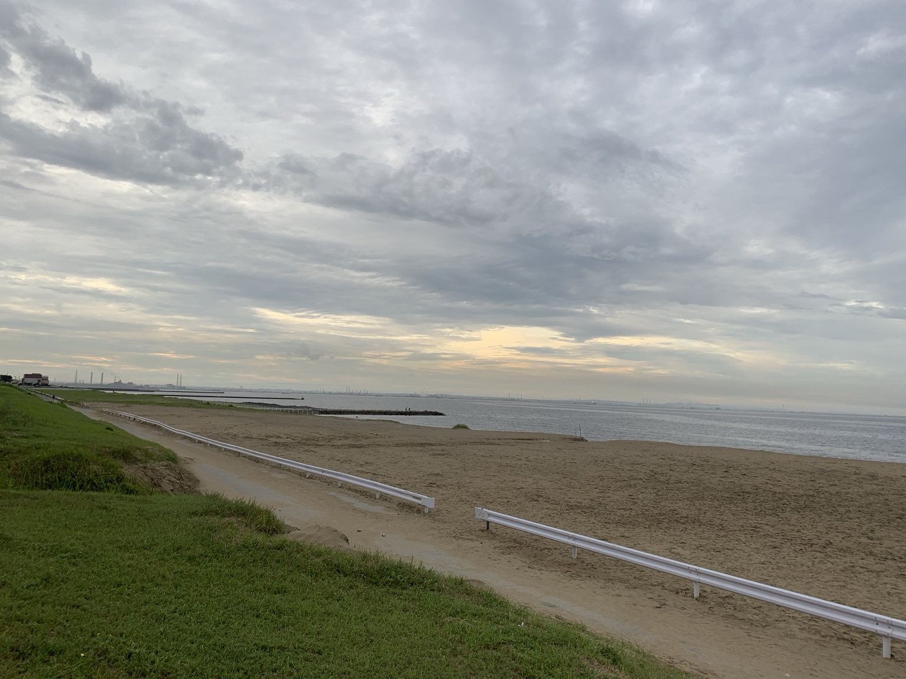
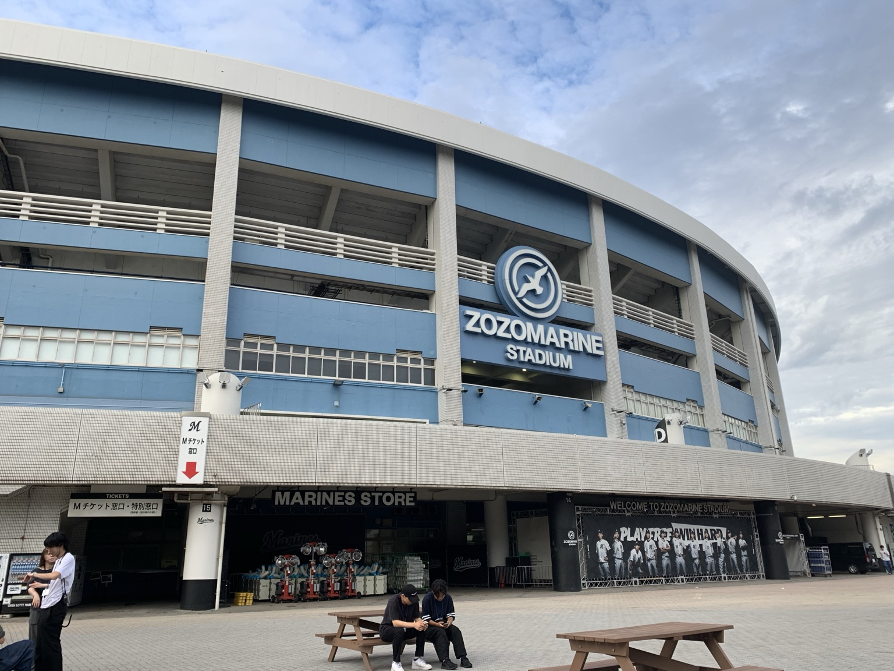
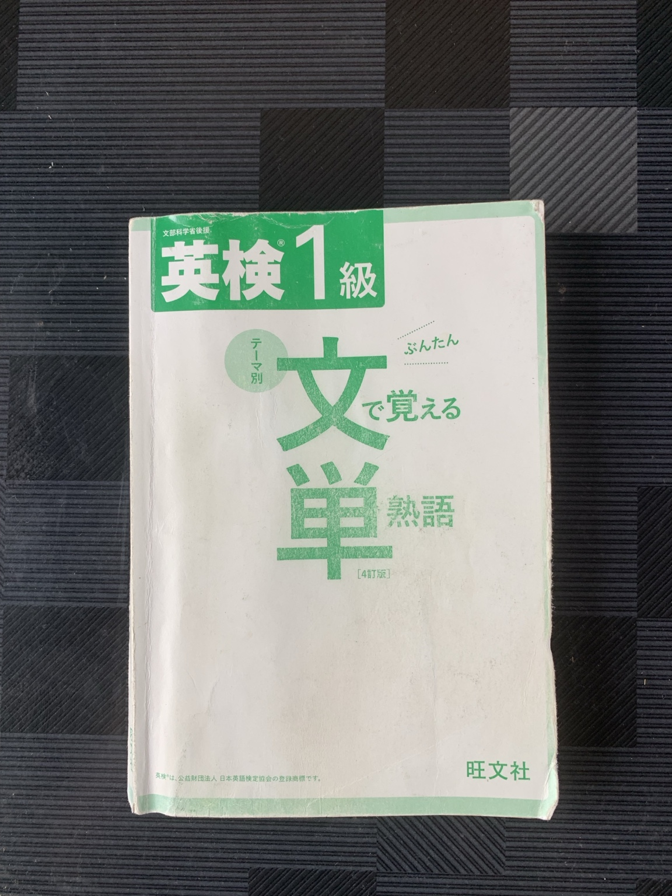
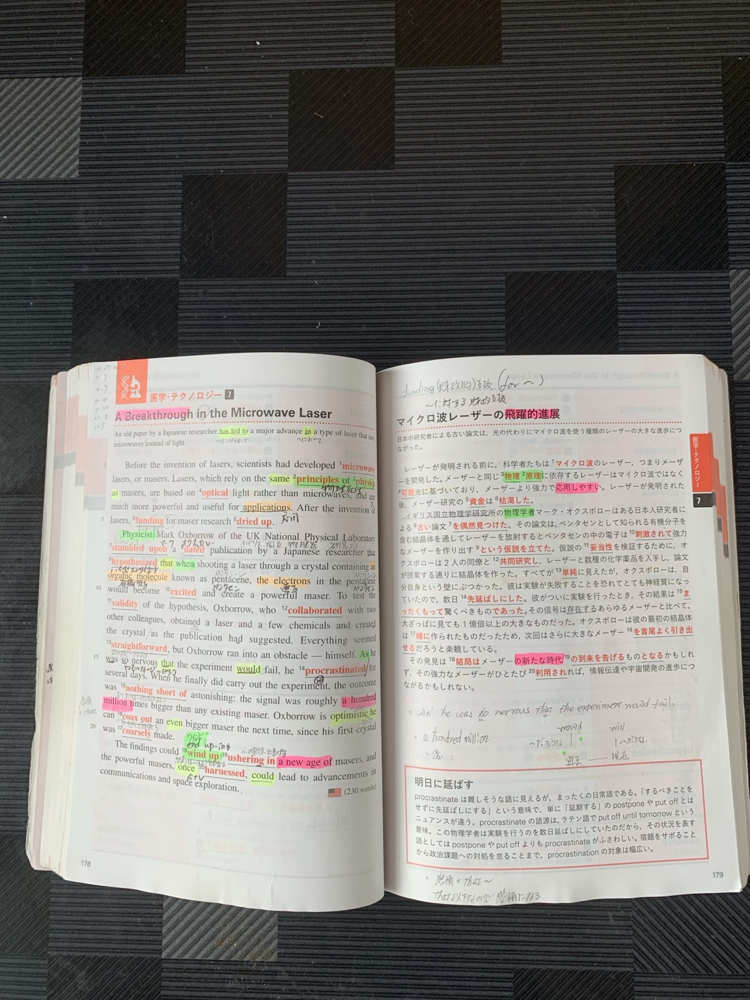
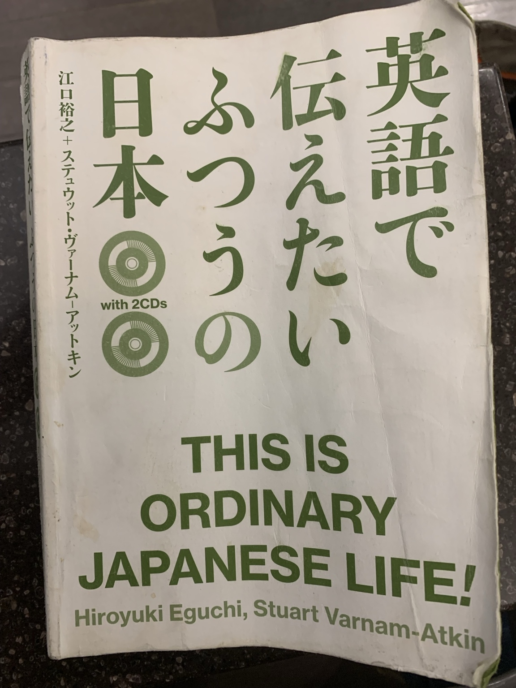

35歳、修士2年。ハンガリーに戻る前に、日本での時間を振り返る
ハンガリーに戻ります。
私は今、35歳。ハンガリーの大学院で観光経営学を学んでいる、修士2年の学生です。
出発を前にした正直な気持ちは、「ハンガリーに戻るのがだるいな」です。
日本の食事がうまい。何を食べてもおいしいし、もう少し日本にいたい。
自分で決めた留学ですが、戻る日が近づいたからといって、自然とやる気が湧いてくるわけではありません。また、あの地獄の勉強が待っているのかと思うと、普通に気が重くなります。
ただ、今回の日本滞在では、いろいろな経験ができました。初めてのビジネスコンテスト、イベントの裏方のアルバイト、英語の勉強。そして、留学ラボの活動を通じた新しい出会い。
出発する前に、日本で過ごした時間を少し振り返ってみようと思います。
授業に出られていない3週間。正直、焦っています
大学の学期は9月初旬から始まっていますが、私はすでに3週間ほど授業に出られていません。日本でビジネスコンテストに出場するため、ハンガリーに戻る時期を遅らせたからです。

今回は千葉と東京、二つのビジネスコンテストに初挑戦しました。どちらも現在は結果待ちです。発表や提出を終えて一区切りつきましたが、その間も大学の授業は進んでいます。
日本に残るのは自分で決めたことなので、戻ったら遅れを取り戻さなければいけません。分かってはいるものの、3週間分の授業をキャッチアップすることを考えると、結構焦っています。
修士1年で勉強の大変さを経験しているので、「あの地獄のような勉強が、また始まるのか」と思ってしまいます。
戻ったらやるつもりですが、出発前から気合い十分というわけではありません。
初めてのビジコンで、きつかった経験が生きた
ビジネスコンテストへの出場は、今回が初めてでした。
ご活躍されている経営者や、さまざまな起業家志望の方と出会い、それぞれの事業や実現したいことを聞けたのは、とても刺激的でした。普段は一人で事業を進めているので、ほかの人の挑戦に触れられたことも、参加してよかったと思う理由です。
一方で、準備は大変でした。
私が取り組んでいる事業について、初めて聞く人にも分かるように説明する。何をしたいのか、なぜ必要なのか、これからどうしていくのか。頭の中の考えを、限られた時間で伝えられる形にまとめるのは、簡単ではありませんでした。
そのなかで、思いがけず役に立ったのが、製薬会社で働いていた頃の経験です。
当時はプレゼンやロープレをしこたま鍛えられ、きついと感じることもありました。それが今、自分の事業を説明する場面で生きるとは、当時は思っていませんでした。
資料をまとめ、相手に伝わるように話し、その場の質問にも対応する。今回、その経験に助けられていることを実感しました。
きつかった経験が、時間を置いて別の場所で役に立つ。頑張った経験は大事なんだなと、改めて感じました。
千葉も東京も良い知らせが来てほしいですが、結果を待つ今の時点でも、挑戦してよかったと思っています。
ずっと興味があった、イベントの裏方の仕事

日本にいる間は、単発でイベントのアルバイトも経験しました。いろいろな現場で、有名アーティストのイベントを裏方として支える仕事をしました。
イベントの仕事には、以前から興味がありました。サービス産業を学びたい私にとって、華やかなイベントの裏側がどうなっているのか、自分の目で見てみたかったからです。
実際に働いてみると、仕事はきつかったですが、すごく楽しかったです。
とにかく暑い日もあれば、屋根のない場所で、大雨の中、ずぶ濡れになりながら準備をした日もありました。暑い日は、正直「クソ暑い」という言葉がいちばんしっくりきます。
汗をかいたり、雨に打たれたりしながら、準備を進める。こういう仕事はあまりしたことがなかったので、きつさも含めて新鮮でした。楽しむ側で参加しているだけでは分からない、裏方の大変さを体感しました。
私が経験したのは運営の一部分ですが、観光経営学を学ぶ学生として、実際の現場に関われたことは、すごく勉強になりました。
なかでも強く記憶に残っているのが、夜勤から日勤へと続けて、ぶっ通しで40時間働いたことです。
今振り返ると、さすがに無茶でした。良い働き方だったとは思いませんが、自分でも「ずいぶんぶっ飛んだことをしたな」と思う経験で、忘れられません。
きつかった。でも、楽しかった。
35歳、修士2年になっても、初めて経験する仕事はあります。以前から気になっていた現場に入り、その裏側を見られたことは、日本滞在中の大きな収穫でした。

英語は予定ほど進まなかった。それでも、できるようになったこと

英語の勉強は、思っていたほどできませんでした。日本にいる間に終わらせるつもりだった本も残っていて、そこは心残りです。
それでも、DUO3.0の丸暗記は、自分との約束どおり終えました。英文がすぐに口から出てくるようになるまで繰り返し、今では1時間ほどで全体を1周できるようになりました。
普段から学習したい参考書は常に持ち歩き、暇さえあれば見ています。周りの人にはよくありえないと言われますが、表紙は購入後すぐに捨てます。 結局、Duo3.0の560例文も音源だけで丸暗記してしまったので、いつの間にか参考書までなくしてしまいました。
また、『英検1級 文で覚える単熟語』も、1日で全部読めるようにしました。この二つを仕上げられたことには、達成感があります。

今回、もうひとつ発見がありました。昔と比べて、英文を何回か見れば、すぐに瞬間英作文ができるようになっていたことです。
30歳になってから英語の勉強に本腰を入れた私にとって、これはうれしい変化でした。「昔はこれにあんなに苦労していたのか」と感じ、積み重ねてきた勉強の成果を実感できました。
残っている本は、ハンガリーに戻る飛行機の中で進めるつもりです。

『英語で伝えたい ふつうの日本』は、結構おすすめです。
p>これも中古でたまたま見つけましたが、300円くらいでした。通訳案内士が外国人にどうのように日本の習慣や文化を紹介しているのかがわかり真似したくなる一冊です。今回の旅程は、成田からソウル、西安を経由してブダペストへ。到着まで合計33時間40分。ソウルで2時間35分、西安では14時間20分の乗り継ぎ待ちがあります。
長い。
飛行機に乗っている間は目的地に近づいている感じがありますが、空港で待つ時間は、なかなか移動が進んでいる気がしません。長い移動を終えたときに、勉強も少し片づいていたらうれしいです。
気は重いけど、楽しみもある
ハンガリーに戻る楽しみもあります。
これまで留学を目指す志願者として関わっていた学生たちが、今はハンガリーの現役大学生になっています。同じハンガリーで学ぶ仲間として会えると思うと、うれしいです。
現地の知り合いも増え、ルームシェアも検討しています。まだ物件は決まってはいませんが、これからの生活を考える楽しみができました。
留学ラボの活動を通じて、ドイツやイタリアで学ぶ現役学生とも知り合えました。自分の留学から始まった活動が、別の国で挑戦している人たちとのつながりにも広がった。こうした出会いがあったことも、続けてきてよかったと思う理由のひとつです。
今回の日本滞在では、やり残したこともありますが、やり遂げたことや、新しく経験できたこともありました。
日本の食事は名残惜しいし、授業の遅れにも焦っています。それでも、戻った先には勉強だけでなく、人に会う楽しみも待っています。
35歳、修士2年。とりあえず、英語の本を荷物に入れて、ハンガリーに戻ります。
焦らず、テンパらず。一つひとつ終わらせていきます。